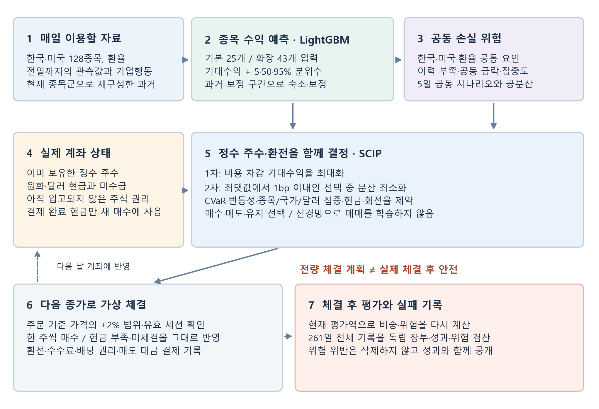
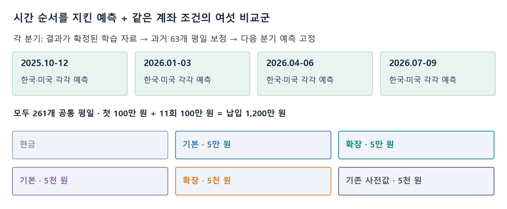
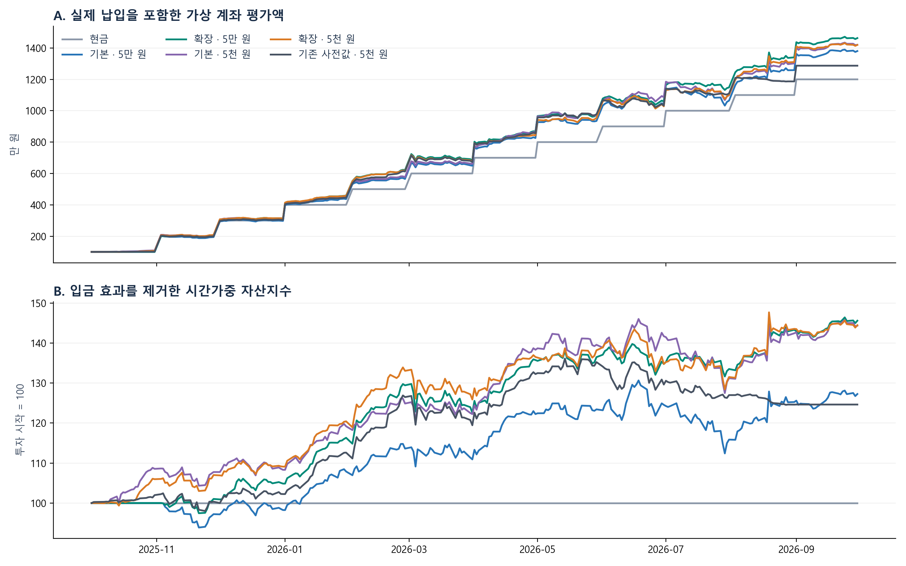
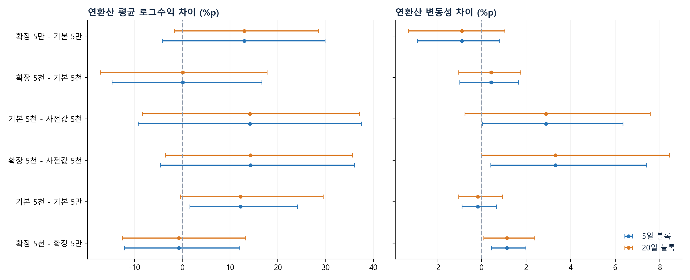

완료된 여섯 계좌의 연구 보고서 · 모델 채택 보류
목차
한미 통합 일별 포트폴리오 연구
모델 v0.1 계열 · 정수 주수 · 원화 총자산 · 2026.10.11
100만 원으로 시작해 매달 100만 원을 적립했을 때, 수익 우선·변동성 차선 모델은 실제 체결 제약을 견딜 수 있는가?
초록
한국·미국 주식을 원화 총자산 기준으로 평가하는 일별 포트폴리오를 연구했다. LightGBM의 5개 공통 평일 수익 예측과 공동 손실 시나리오를 정수 주수·환전 최적화에 연결했다. 비용 차감 기대수익을 먼저 최대화하고, 그 최댓값에서 1bp 이내인 해 중 분산이 가장 작은 해를 선택한다. 학습 입력 25개와 43개, 최소 주문 5만 원과 5천 원을 교차하고 현금 및 기존 사전값 대조군을 포함한 여섯 계좌를 비교했다.
2025.10.01-2026.09.30의 261개 공통 평일에 총 1,200만 원을 납입했다. 최소 주문 5만 원에서 확장 모델의 평가이익은 263.2만 원, 기본 모델은 180.5만 원이었다. 그러나 5천 원에서는 각각 219.7만 원과 220.3만 원으로 우위가 재현되지 않았다. 모든 주식 전략에서 체결 후 위험 한도 위반과 최적화 실패가 남았다. 이 결과는 후속 개선의 근거이며 운용 모델 채택이나 미래 수익의 증거로 해석하지 않는다.
1. 서론
종목의 상승 가능성을 맞히는 일과 실제 계좌의 수익을 높이는 일은 다르다. 새 매수가 유망해도 기존 보유 종목과 함께 하락하거나, 한 주 가격이 현금·집중 한도를 넘거나, 매도 대금이 아직 결제되지 않았으면 주문은 실행되지 않는다. 따라서 본 연구의 단위는 경보 한 건이 아니라 현금과 권리를 포함한 전체 계좌다.
질문은 세 가지다. 첫째, 사건·관계 입력이 비용 차감 계좌 성과를 개선하는가? 둘째, 같은 기대수익 부근에서 변동성을 줄이는 목표가 실현 결과에서도 유지되는가? 셋째, 계산상 적합한 주문이 실제로 일부만 체결된 뒤에도 위험 한도를 지키는가?
범위: 현재 선택된 128종목으로 과거를 재구성한 회고적 연구. 독립적인 미래 검증·실계좌 성과가 아니다. 모의 전진 관찰 0일, 소액 실전 관찰 0일, 실제 주문 0건.
3. 모델 구조와 학습 목적

학습 손실과 포트폴리오 목적함수는 다르다
평균 예측기는 평균제곱오차(MSE), 5·50·95% 분위수 예측기는 pinball 손실을 사용한다. 한국과 미국을 따로 학습하고 과거 보정 구간에서 평균을 축소·보정하며 분위수의 순서를 정렬한다. 기본 입력 25개는 기존 23개와 환율 2개다. 확장 입력 43개는 여기에 사건 9개, 관계 7개, 사건-관계 2개를 더한다.
트리 수 160, 최대 잎 15, 최대 깊이 5, 최소 잎 표본 150, 학습률 0.035, L2 규제 20, 고정 시드 804를 사용했다. 포트폴리오 이익을 LightGBM에 역전파하지 않는다. 세 분위수만으로 전체 확률분포가 정의되지는 않으므로 공동 손실 위험은 별도로 추정한다.
예측 기간은 “5개 공통 평일”, 의사결정은 매 평일이다. 예측 기간이 5일이라고 해서 5일마다만 거래하는 것은 아니다.
4. 수익 우선의 비중 결정
q는 종목별 목표 정수 주수, f는 환전량, w(q,f)는 원화 노출, C는 예정 거래비용, V는 거래 전 평가액이다. mu는 보정된 기대수익이다. 이 비교에서는 추가 모호성 반경을 0으로 두었으므로 분포 강건 최적화의 성과로 표현하지 않는다.
1차: J* = max J(q,f), J(q,f) = mu^T w(q,f) - C(q,f) / V
2차: min w^T Σ w, 단 J(q,f) ≥ J* - 0.0001
0.0001은 예측 기간의 1bp(0.01%p)다. 변동성에 임의 가중치를 곱해 수익과 맞바꾸기보다 수익의 허용 손실을 먼저 명시한다. 이것은 예상 수익의 선택 규칙이며, 실현 연수익률이 같다는 통계적 결론은 아니다.
| 제약·위험 | 완료된 실험의 설정 |
|---|---|
| 공동 이력 부족 | 관측 60일 미만 신규 매수 제외, 120일 미만 종목 비중 2% |
| 공동 위험 | 504일 창, 한국·미국·환율 요인, 공분산 축소와 국가 잔차 상관 |
| 분포 보정 사용 | 분위수 폭이 더 크면 공분산·시나리오 위험을 상향 조정 |
| 집중 한도 | 보통 종목 5%, 국가 주식 65%, 달러 총노출 75%, 주식 95% |
| 군집·거래 | 상관 0.7 초과 군집 25%, 일일 총 거래대금/평가액 20% |
| 꼬리·변동성 | 5일 CVaR95% 7%, 스트레스 손실 15%, 연변동성 18% |
| 시장 스트레스 | 어느 시장이든 최근 20일 수익 -5% 미만이면 변동성 한도 12% |
| 유동성·자료 | 최근 20일 거래대금의 0.1%, 7일 초과 오래된 가격 거래 제한 |
시장별 상위 20개 신규 후보와 모든 기존 보유·권리를 포함한다. 보유 종목의 전망이 없으면 기대수익 방향을 0으로 두고 신규 매수를 금지하되 위험 축은 남긴다. 달러 현금의 기대수익 방향도 0이지만 환율 위험은 포함한다. 현금 비중은 제약과 수익·비용의 결과로 정해지며 별도 신경망이 예측하지 않는다.
계획의 기대수익·분산·CVaR·회전율은 거래 전 NAV, 집중·현금 비중은 비용 차감 후 NAV를 사용한다. 체결 후 검산은 현재 NAV를 사용하며 이미 낸 비용을 미래 손실에 다시 더하지 않는다. 최적화는 전량 체결을 가정하므로 두 평가가 일치할 필요는 없다.
5. 비교 실험 설계

첫날 현금 100만 원에서 시작하고 이후 11개월의 첫 공통 평일마다 100만 원을 추가했다. 현금 대조군 이자는 0이다. 주식 전략은 공매도·차입·소수점 주식 주문을 허용하지 않는다. 1주 가격이 가용 현금보다 높으면 살 수 없으며, 그보다 싸더라도 종목 비중 한도를 넘으면 매수할 수 없다.
2025년 10월, 2026년 1·4·7월에 시작하는 네 분기를 한국·미국 각각 평가했다. 학습·보정 시점까지 결과가 확정된 표본만 이용했고 보정 창은 과거 63개 공통 평일이다. 이번 계좌 재현은 저장된 예측을 사용하며 다시 학습하지 않았다. 예측 대상은 배당 권리를 재투자하지 않은 5일 원화 총자산 변화다.
현금 외 대조군인 “기존 사전값”은 기존 시장 사전값과 기본 모델의 분포 폭을 조합했다. 예전 경보 기반 모델 전체와의 동등한 재현 비교는 아니다. 주 비교는 최소 주문 5만 원에서 확장 대 기본이며, 5천 원은 민감도 분석이다. 결과가 가장 좋은 주문 하한을 사후에 선택하지 않는다.
시간 분할이 해결하지 못한 한계
종목군은 2026년 10월에 선택된 한국 64개·미국 64개다. 상장폐지·과거 편입 이력을 복원한 당시 종목군이 아니다. 분석 계획도 이전 대조군과 일부 경로를 본 뒤 고정했으므로 맹검 사전등록 연구가 아니다. 시간 순서를 지킨 예측만으로 이 선택 편향이 사라지지는 않는다.
사용자가 제안한 시장 판단·종목 전망·비중 결정·매매 결정의 네 단계 중, 이번 여섯 계좌는 주로 입력 확장과 최소 주문 효과를 검증한다. 고정 주식 비중·단순 변동성 조절·균등 배분·정기 매매의 완전한 요인별 비교는 후속 과제다.
6. 체결·비용과 평가 정의
매일 전일 관측값으로 주문을 만들고 이후 제공자의 유효 종가로 가상 체결한다. 매수는 기준가의 +2% 이하, 매도는 -2% 이상이어야 한다. 예산이 부족하면 정수 주수로 줄이며 유효 종가가 없으면 미체결이다. 이는 장중 지정가 주문의 실제 체결 확률이나 체결 순서를 재현하지 않는다.
| 항목 | 동결한 반사실적 비용 가정 |
|---|---|
| 한국 | 매매 수수료 0.015%, 매도 세금 0.20% |
| 미국 | 매매 수수료 0.10%, 소액 주문 예외와 최소·반올림 규칙 적용 |
| 미국 매도 SEC | 0.00206%, 최소 0.01달러 및 반올림 |
| 슬리피지 | 매수·매도 각각 0.05% |
| 환전 | 국내 세션 조건 0.05%, 그 외 0.50% |
| 적용 범위 | 2026.10.09 기준 가정을 과거 전체에 적용; 개인별 과세·말일 청산 제외 |
이 수치는 프로젝트가 동결한 토스증권 비용 시나리오 [6]이며 과거 실제 또는 사용자 계좌 적용 요율을 검증한 값이 아니다. 매도 대금은 한국 2번째·미국 1번째 후속 제공자 세션 종가 뒤 결제되고 다음 공통 평일부터 사용한다. 당일 매도로 새 매수를 미리 충당하지 않는다.
배당은 지급일이 확인되지 않으면 사용 불가능한 미수금으로 남는다. 세 전략이 보유한 셀트리온 주식 권리는 기존 주식을 유지한 채 1주당 0.05주 권리를 기록하고, 6월 30일 종가 입고를 일정 기반 가정으로 사용했다. 소수 권리는 지급일 미상 미수금이다. 실제 증권사 입고 확인이 아니며 말일 평가액은 즉시 출금 가능한 금액과 다르다.
각 성과 숫자의 의미
평가이익은 말일 NAV에서 납입 합계 1,200만 원을 뺀 값이다. 이익/납입액은 연수익률이 아니다. XIRR는 각 입금 날짜와 말일 NAV를 반영한 연환산 금액가중 수익률이다. TWR는 입금 효과를 제거한 일별 수익을 복리로 연결한다. 변동성은 일별 TWR 수익 표준편차를 252일 기준으로 연환산하고, 최대 낙폭은 같은 단위자산 지수에서 측정한다.
최적화 실패일과 위험 위반일을 성과에서 제거하지 않았다. 장부·성과·모든 위험 제약을 각각 별도 계산으로 검산했다. 회계 검산 통과는 가격·체결 가정이 현실적이라는 검증과 별개다.
7. 결과: 여섯 계좌의 전체 성과
| 전략 | 평가액 만 원 | 이익 만 원 | XIRR % | TWR % | 변동성 % | 최대 낙폭 % |
|---|---|---|---|---|---|---|
| 현금 | 1,200.0 | 0.0 | 0.00 | 0.00 | 0.00 | 0.00 |
| 기본 · 5만 원 | 1,380.5 | 180.5 | 29.13 | 27.26 | 16.81 | -13.97 |
| 확장 · 5만 원 | 1,463.2 | 263.2 | 43.18 | 45.59 | 15.93 | -5.81 |
| 기본 · 5천 원 | 1,420.3 | 220.3 | 35.85 | 44.35 | 16.65 | -12.69 |
| 확장 · 5천 원 | 1,419.7 | 219.7 | 35.74 | 44.48 | 17.07 | -10.47 |
| 기존 사전값 · 5천 원 | 1,287.2 | 87.2 | 13.79 | 24.63 | 13.75 | -8.50 |

5만 원 조건의 확장 모델은 기본보다 이익이 82.7만 원 많고 변동성은 0.88%p 낮았다. 하지만 5천 원 조건에서는 확장 모델 이익이 약 5,946원 적고 변동성은 0.43%p 높았다. 좋은 결과 하나를 전체 모델의 우위로 일반화할 수 없다.
8. 월별 적립과 실행상 실패
| 월말 | 납입 합계 | 기본 5만 | 확장 5만 | 기본 5천 | 확장 5천 | 사전값 5천 |
|---|---|---|---|---|---|---|
| 2025-10 | 100 | 100.0 | 100.0 | 108.5 | 106.0 | 102.0 |
| 2025-11 | 200 | 194.4 | 202.0 | 207.0 | 208.0 | 198.7 |
| 2025-12 | 300 | 297.5 | 313.5 | 308.6 | 314.0 | 304.4 |
| 2026-01 | 400 | 436.5 | 458.7 | 449.7 | 457.0 | 445.4 |
| 2026-02 | 500 | 565.0 | 621.7 | 575.9 | 615.4 | 612.6 |
| 2026-03 | 600 | 649.2 | 683.5 | 661.6 | 676.9 | 673.0 |
| 2026-04 | 700 | 825.8 | 867.7 | 861.9 | 842.5 | 855.8 |
| 2026-05 | 800 | 934.7 | 972.9 | 970.5 | 954.0 | 977.4 |
| 2026-06 | 900 | 1,044.2 | 1,059.3 | 1,086.9 | 1,028.0 | 1,032.7 |
| 2026-07 | 1,000 | 1,064.4 | 1,148.6 | 1,099.0 | 1,100.6 | 1,109.7 |
| 2026-08 | 1,100 | 1,258.8 | 1,340.3 | 1,301.6 | 1,310.6 | 1,187.0 |
| 2026-09 | 1,200 | 1,380.5 | 1,463.2 | 1,420.3 | 1,419.7 | 1,287.2 |
표 2. 월말 가상 평가액, 단위 만 원. 현금 대조군은 매월 납입 합계와 같다. 월별 이익이나 월수익률 표가 아니다.
| 전략 | 평균 주식 비중 % | 거래비용 원 | 환전비용 원 | 최적화 실패일 | 위험 위반일 | 꼬리 위험 위반일 |
|---|---|---|---|---|---|---|
| 현금 | 0.0 | 0 | 0 | 0 | 0 | 0 |
| 기본 · 5만 원 | 42.4 | 89,250 | 14,643 | 94 | 130 | 119 |
| 확장 · 5만 원 | 45.9 | 93,366 | 14,133 | 89 | 140 | 125 |
| 기본 · 5천 원 | 45.9 | 72,086 | 9,108 | 118 | 140 | 122 |
| 확장 · 5천 원 | 49.4 | 93,083 | 15,264 | 84 | 136 | 117 |
| 기존 사전값 · 5천 원 | 39.2 | 76,013 | 11,165 | 40 | 104 | 82 |
거래비용 열은 기록된 수수료·세금이며 슬리피지는 체결가격에 반영된다. 환전비용은 별도 열이다. 위험 위반일은 하루에 한 제약 이상 위반한 날이고, 꼬리 위험 위반일은 그 부분집합이다. 최적화 실패와 위험 위반은 같은 날 겹칠 수 있으므로 열을 더하지 않는다.
추가 결제 현금 위반과 음수 통화 잔고는 여섯 계좌 모두 0일이었다. 그러나 모든 주식 전략에서 최소 104일, 최대 140일의 체결 후 위험 위반이 있었다. 높은 이익이나 줄어든 낙폭만으로 현재 실행 정책을 승인할 수 없다.
평균 주식 비중은 약 39-49%다. 전체 투자 상태의 우위를 보이려면 같은 현금·결제 조건의 단순 변동성 조절과 비교해야 한다. 현금 대기 효과를 예측력으로 간주하지 않는다.
9. 차이는 얼마나 확실한가?

여섯 전략에 같은 재표본 인덱스를 적용하는 짝지은 원형 블록 부트스트랩을 사용했다. 블록 길이 5일·20일, 각각 2,000회다. 연환산 평균 로그수익과 연환산 변동성의 차이를 측정하며 학습이나 재최적화를 반복하지 않는다. 이 구간은 관측된 경로와 약한 정상성 가정에 조건부다.
주 비교인 확장 5만 원 - 기본 5만 원에서 20일 블록의 연환산 평균 로그수익 차이 구간은 -1.70 ~ +28.50%p, 변동성 차이 구간은 -3.28 ~ +1.05%p다. 두 구간 모두 0을 포함한다. 표본의 이익·변동성 우위와 통계적으로 확인된 우위는 구분해야 한다.
이 구간은 여러 비교와 블록 길이를 동시에 보장하는 구간이 아니며, 이미 본 결과를 선택한 편향도 보정하지 않는다. 1년 경로만으로 장기 안정성을 보장할 수 없다. 기존 프로젝트의 연수익 비열등 한도 0.5%p와 변동성 10% 개선 기준을 이 비교에서 정식 검정한 것도 아니다.
결론: 입력 확장의 효과는 최소 주문 설정에 민감하다. 현재 자료로 “수익이 같으면서 변동성이 낮다”거나 “확장 모델이 우월하다”고 확정하지 않는다.
10. 개선 방안과 다음 검증
먼저 해결할 문제: 주문 계획과 체결 결과의 차이
완료된 최적화는 전량 체결을 계획하지만 현금·세션·가격 조건 때문에 일부만 체결될 수 있다. 이미 위험한 계좌는 매매를 안 해도 계속 위험하다. 따라서 최적화 실패를 “안전한 유지”로 표시하지 않고, 기존 위험 수리와 신규 수익 기회를 구분해 평가해야 한다.
별도 개발한 고정 가격 부분 체결 점검은 639개 전략-날짜에서 조건부 통과 164건, 무체결 상태부터 수리 필요 167건, 모델 안의 반례 152건, 판정 미완 15건, 계획 없음 141건을 확인했다. 이어 네 비교군의 첫 반례에서 원래 주문 범위 안 정수 조합을 모두 검사한 제한적 수리는 매수를 남긴 해를 찾았다. 이는 고정 가격·환율의 소규모 검증이며, 이번 1년 수익에 반영되거나 모든 위험 위반을 해결한 결과가 아니다.
| 판단 단계 | 다음 비교에서 고정할 것 | 통과에 필요한 관찰 |
|---|---|---|
| 시장 판단 | 동일 종목, 고정 비중·단순 변동성·현 규칙 | 현금 대기와 상승 기회 상실까지 비용 차감 비교 |
| 종목 전망 | 동일 기간·종목·성숙한 라벨 | 보정·순위·꼬리 정확도와 종목군 선택 편향 |
| 비중 결정 | 동일 전망·위험 예산·보유 계좌 | 균등 배분 대비 이익·집중·공동 손실 |
| 매매 결정 | 동일 목표, 정기·이탈폭·비용 인식 | 임의 부분 체결·가격/환율 이동·위험 수리 지연 |
기존 승격 기준을 유지
기존 설정은 비용 차감 연초과수익 2%p, 짝지은 비교의 하한 0, 최대 낙폭 15%를 둔다. 같은 수익 경로는 연수익 비열등 허용 0.5%p와 변동성 10% 개선을 별도로 요구한다. 전진 모의 관찰 최소 126일, 소액 실전 관찰 최소 126일, 미해결 주문·현금 불일치 0건도 필요하다. 이번 연구는 이 전체 기준을 통과하지 않았다.
후속 순서는 부분 체결·가격 이동을 포함한 실행 정책의 사전 고정, 같은 조건의 단순 대조군 비교, 아직 보지 않은 기간 검증, 실제 호가·계좌 요율·결제 확인이다. 이후 일일 텔레그램 매매안과 모의 관찰을 연결하고, 별도 승인 범위의 실전 관찰을 거쳐 자동매매 여부를 판단한다.
종합: 수익 우선 목표와 위험 제약을 구현하고 여섯 계좌를 끝까지 검산했다. 남은 핵심은 더 높은 표본 수익을 찾는 것보다, 수익 기회를 유지하면서 체결 후 위험을 실제로 제한하는 실행 정책과 독립 검증이다.
11. 참고문헌과 재현 근거
[1] Park, K., Hong, S., Jeon, J.-J. (2025). Dynamic Higher-Order Relations and Event-Driven Temporal Modeling for Stock Price Forecasting. IJCAI, 6048-6056. 원문
[2] Rockafellar, R. T., Uryasev, S. Optimization of Conditional Value-at-Risk. 저자 원고(1999); Journal of Risk 2(3), 2000. 원문
[3] Boyd, S. et al. (2017). Multi-Period Trading via Convex Optimization. Foundations and Trends in Optimization 3(1), 1-76. 원문
[4] Composer. Threshold trading. 공식 설명, 2025.06.18 갱신. 서비스 운용 방식의 참고 자료. 원문
[5] KR101830090B1. 포트폴리오 최적화 시스템 및 그 방법. 기술적 참고 문헌. 원문
[6] 토스증권 수수료 안내. 본문 비용은 2026.10.09 프로젝트 동결 가정이며 계좌별 요율 확인을 대신하지 않는다. 원문
재현 가능한 결과와 보관 식별자
표·그래프는 완료된 비교 보관본의 comparison.json과 curves.csv에서 직접 생성했다. 월말 표는 각 월의 마지막 평가일이다. 입력·계좌·성과·위험 검산 보관본의 해시를 먼저 확인하고, 본 보고서의 전체 근거 목록은 함께 배포하는 whole-wealth-summary.json에 저장한다. 원시 가격·모델 바이너리·개인 계좌는 공개하지 않는다.
핵심 비교: portfolio-whole-wealth-comparison-20261011-v1
4850375a61df16597951dc4a24c04c2cc7232d1c85519a8612c58f60e552da47
분석 계획: portfolio-whole-wealth-comparison-plan-20261011-v1
b26c078f52063528f3c76d3112b7412cfd44f0826636bdebca5e80f73871de26
연구의 예측 시간·실행 가정은 동결 입력 등록문과 각 계좌 실행 기록을 따른다. 입력 등록문 내부의 과거 기본 정책 기간·초기 1억 원 값보다 이번 실험 protocol의 기간과 적립식 계좌 설정이 우선한다. 이전 2025.04-2026.03 보고서는 별도 실험으로 보존한다.
자료 출처 열람 2026.10.11. 보고서 작성 과정에서는 새 수집·학습·계좌 재실행을 하지 않았다. 모델 채택 보류, 운영 거래 비활성화.